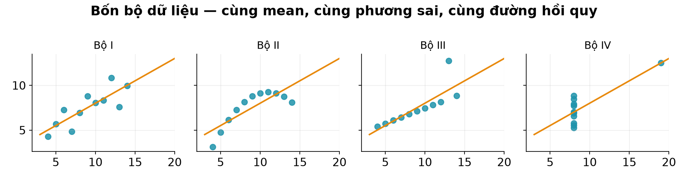
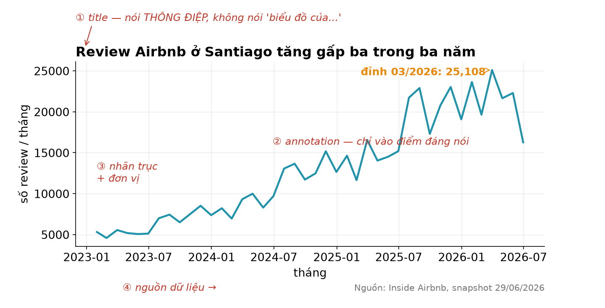
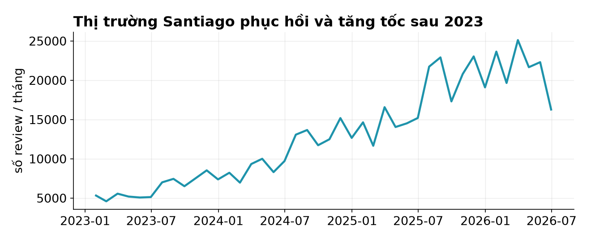
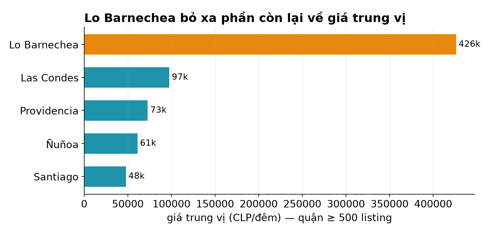
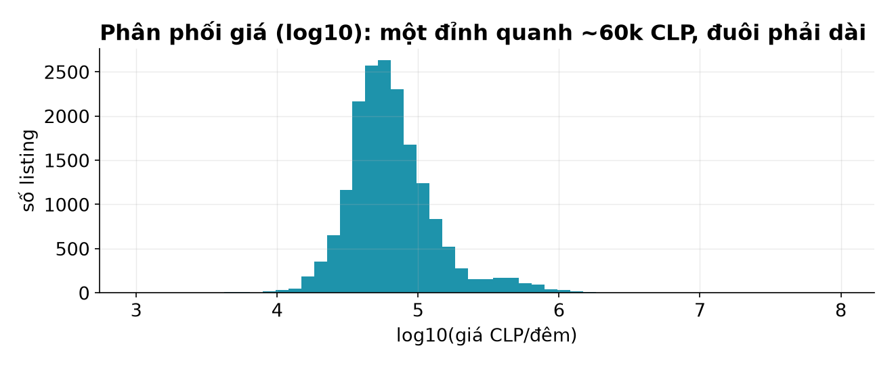
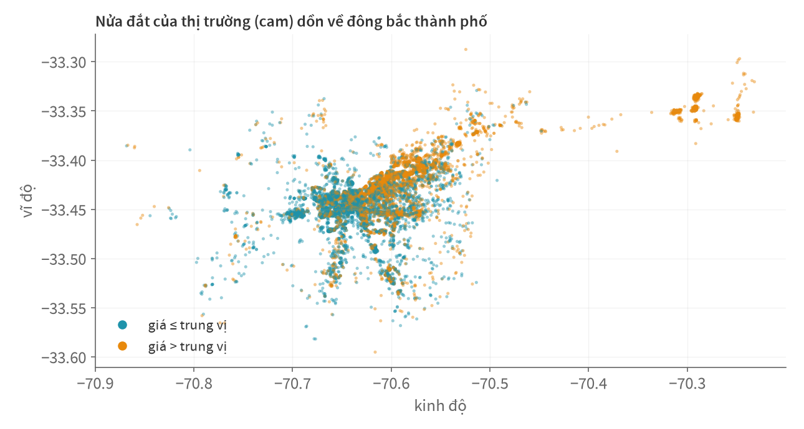
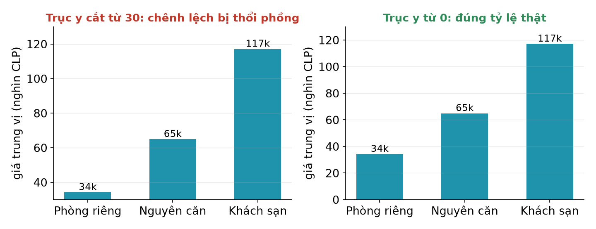

Học kì 1, năm học 2026–2027
Viện Trí tuệ nhân tạo, Trường ĐH Công nghệ, ĐHQGHN
matplotlib, pandas plot — và những hình tự giải thích được.
describe() không kể hết chuyện.

| Bạn muốn cho thấy… | Dạng | Ví dụ buổi này |
|---|---|---|
| Diễn biến theo thời gian | line | review theo tháng |
| So sánh giữa các nhóm | bar (ngang nếu tên dài) | giá theo quận |
| Hình dáng phân phối | hist | phân phối giá |
| Quan hệ hai đại lượng | scatter | vị trí × giá |
Chọn dạng theo câu hỏi, không theo sở thích thẩm mỹ. Một con số quan trọng đôi khi chỉ cần in to — không cần biểu đồ.
Một API cho mọi loại hình.
import matplotlib.pyplot as plt
fig, ax = plt.subplots(figsize=(8, 4)) # tờ giấy + khung vẽ
ax.plot(thang.index, thang.values) # vẽ lên khung
ax.set_title("...")
ax.set_ylabel("số review / tháng")
plt.show()

thang = (rv.set_index("date")
.resample("ME").size()
.iloc[:-1]) # bỏ kỳ cụt!
fig, ax = plt.subplots()
ax.plot(thang.index,
thang.values,
color="#1E93AB", lw=2)

Mọi kỹ năng buổi 8 (resample, kỳ cụt) đi thẳng vào biểu đồ.
top = (tk[tk["n"] >= 500]
.nlargest(8, "median")
.sort_values("median"))
ax.barh(top.index,
top["median"])
ax.bar_label(bars, ...)

Tên quận dài → bar ngang cho chữ nằm thẳng; số dán ngay đầu thanh (bar_label) đỡ phải dò trục; tô cam đúng MỘT thanh cần nhấn.
ax.hist(np.log10(gia),
bins=55)
ax.set_xlabel(
"log10(giá CLP/đêm)")

Bài buổi 10 bằng hình: phân phối giá phải nhìn qua thang log.
Thử vài mức bins — quá ít thì mù, quá nhiều thì nhiễu.
mau = np.where(
s["price"] > median,
"#E8890C", "#1E93AB")
ax.scatter(s["longitude"],
s["latitude"],
s=6, c=mau,
alpha=0.45)

Chỉ lat/lon + màu nhị phân đã thành một bản đồ đơn giản — alpha thấp giúp 18 nghìn điểm không che lấp nhau.
fig, axes = plt.subplots(1, 2, figsize=(10, 4), sharey=True)
axes[0].hist(gia_t9, bins=40)
axes[0].set_title("09/2025")
axes[1].hist(gia_t6, bins=40)
axes[1].set_title("06/2026")
So sánh hai snapshot công bằng: sharey=True ép chung thang đo — so sánh mà khác thang là gian lận thị giác.
Nhanh khi khám phá — nghiêm túc khi xuất bản.
thang.plot() # line
df["room_type"].value_counts().plot.barh() # bar ngang
df["price"].plot.hist(bins=50) # hist
pandas gọi matplotlib hộ bạn — trục, nhãn tạm đủ khi tự mình xem.
Khám phá: cứ .plot. Nộp/báo cáo: quay về fig, ax chỉn chu.
fig.savefig("figures/gia_theo_quan.png",
dpi=150, bbox_inches="tight")
figures/ khi chạy pipeline —
không chỉnh tay, không chụp màn hình. Sửa hình = sửa code + chạy lại.
plt.rcParams.update({
"figure.facecolor": "white",
"axes.spines.top": False, "axes.spines.right": False,
"axes.grid": True, "grid.alpha": 0.25,
"font.size": 12,
})
Khai một lần đầu notebook/script — mọi hình cùng một phong cách. Phong cách nhất quán là một tiêu chí chấm hình của bài tập lớn.
Biểu đồ có thể nói dối mà không cần sai số liệu.

Mục 5 của đề bài tập lớn: ≥6 hình, mỗi hình kèm 2–4 câu diễn giải — checklist này là hàng rào chất lượng của bạn.
fig, ax + bộ tứ line/bar/hist/scatter phủ 90% nhu cầu.savefig vào figures/ từ pipeline;
rcParams cho phong cách đồng bộ.nlargest).